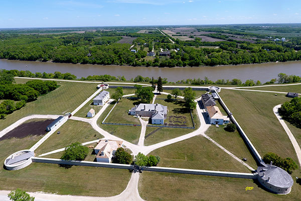

Treaty 1
What is Treaty 1 and its importance?
Treaty 1 was signed on August 3, 1871, between the Canadian government and the First Nations in the Fortgarry. It was the first of many agreements between the Canadian government and Indigenous peoples. The treaty was important because it recognized the rights of Indigenous peoples over their land and set the stage for how the government and Indigenous nations would work together in the future. In exchange for sharing their land, Indigenous people were promised things like education, annual payments, and lands to live on. Treaty 1 is a key part of understanding the relationship between Canada and Indigenous peoples, especially as we work toward reconciliation today. 
Why was Treaty 1 made? And to whose favor was Treaty 1?
Treaty 1 was made because the Canadian government wanted to expand thier control over the land and resources. The government wanted to settle more people in canada and build farms and . The treaty was meant to peacefully resolve conflicts over land ownership. In return for giving up their land, Indigenous peoples were promised things like money, reserved land, and the ability to continue practicing their traditions. However, the treaty mostly benefited the Canadian government. The government received control over a lot of land, which helped them build settlements and grow the country. Many of the promises made to Indigenous peoples, like education and support, were not fully kept, which left many communities in difficult situations.
Where was Treaty 1 negotiated?
Treaty 1 was negotiated at Lower Fort Garry, located in Winnipeg, Manitoba. Lower Fort Garry was a significant historical site and a Hudson’s Bay Company trading post. It was chosen as the location for the treaty negotiations because of its central position in the region and its importance as a hub for trade and communication with Indigenous peoples. The negotiations were held in a tense atmosphere, with both sides seeking to secure their interests. The fort, which had been a site of earlier meetings between Indigenous nations and European settlers, served as a background for this important moment in Canadian history. Today, Lower Fort Garry is a historic site that helps visitors understand the significance of the treaty negotiations and the context in which they took place. The location symbolizes both the colonial history of Canada and the Indigenous peoples’ enduring connection to the land. 
What communities were involved in Treaty 1 and what is their ethnic affiliation?
The communities involved in Treaty 1 were primarily the Saulteaux, Swampy Cree, and Assiniboine nations. These Indigenous peoples had distinct cultures, languages, and ways of life, but shared common interests in the negotiation of the treaty. The Saulteaux people, part of the Anishinaabe cultural group, lived primarily in the areas around Lake of the Woods, and their traditional territory extended into what is now Manitoba. The Swampy Cree, a subgroup of the larger Cree nation, inhabited the forests and wetlands of northern Manitoba and Saskatchewan. The Assiniboine, a Plains Indigenous people, lived in the southern prairies and were closely related to the Sioux and other Plains nations. Each of these communities had their own leaders who played significant roles in the treaty negotiations, ensuring that their peoples' interests and concerns were addressed. While they were distinct groups, their shared desire for security, land, and rights in the face of Canadian expansion led them to form an alliance for the purposes of signing Treaty 1.
What are the historic terms of Treaty 1?
The historic terms of Treaty 1 were designed to outline the relationship between the Canadian government and the Indigenous nations involved. The treaty promised the Indigenous peoples several provisions, including the establishment of reserves where they could continue to live and practice their traditional way of life. In return for their land, the Indigenous peoples were to receive annual payments, along with a commitment from the government to provide agricultural support and education. The terms also outlined hunting, fishing, and trapping rights for the Indigenous peoples, though these rights were not always respected or upheld in practice. One of the key provisions was the promise of land, but the amount allocated was often less than what was initially expected. The treaty also included provisions for the protection of Indigenous cultural and spiritual practices, but many of these promises were not fully realized over time. The historic terms of Treaty 1, while seen as a compromise between the two parties, were heavily skewed in favor of the Canadian government, leaving many of the promises unfulfilled or underfunded.
What makes Treaty 1 different from other treaties in Canada?
Treaty 1 is unique because it was the first of the Numbered Treaties, a series of eleven treaties that were signed between 1871 and 1921. As the first treaty, it set the precedent for future agreements between the Canadian government and Indigenous peoples. What makes Treaty 1 stand out is its position in history as a foundational moment in the relationship between the Crown and Indigenous nations in Canada. It marked the beginning of a larger process of land cession, where Indigenous peoples across Canada would be asked to surrender their lands in exchange for certain promises. Additionally, Treaty 1 is distinct in the way it reflects the early attempts by the Canadian government to integrate Indigenous peoples into the economic and social fabric of the growing nation, though often through policies that marginalized Indigenous culture and traditions. Its promises, such as annuities and the creation of reserves, became the model for the other Numbered Treaties, though the fulfillment of those promises was often inconsistent and incomplete.
How is Treaty 1 implemented in today's world?
In today's world, Treaty 1 continues to have an important impact on the lives of the Indigenous communities involved. The treaty forms the basis for ongoing negotiations regarding land rights, compensation, and self-governance. Treaty 1 and the other Numbered Treaties are central to the conversation around reconciliation in Canada, particularly in relation to land claims, resource management, and Indigenous rights. In recent years, Indigenous groups have worked to have the promises made in Treaty 1 and other treaties implied. The implementation of Treaty 1 is also reflected in modern-day political and legal challenges, as Indigenous peoples continue to assert their rights over land, water, and resources. Treaty 1 also plays a role in efforts to preserve Indigenous culture, language, and traditions.